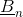
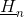
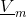
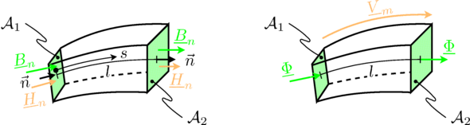
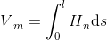
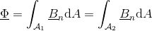
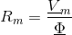
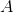
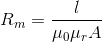

FluxTubeConceptFlux tube concept |
|
Information
This information is part of the Modelica Standard Library maintained by the Modelica Association.
Overview of the concept of quasi static magnetic flux tubes
Following below, the concept of magnetic flux tubes is outlined in short. For a detailed description of flux tube elements, please have a look at the listed literature. Magnetic flux tubes enable the modeling of magnetic fields with lumped equivalent circuit networks.
Since quasi static conditions are assumed, each field quantity can be represented by a complex phasor -- which is indicated by underlining the respective variable:
- Normal component of magnetic flux density, 
- Normal component of magnetic field strength, 
- Magnetic flux,
- Magnetic potential difference, 
The figure below and the following equations illustrate the relationships between
- the normal component of flux density and magnetic flux, and
- the normal component of field strength and magnetic potential difference.

A flux tube confines the magnetic flux. Flied lines, and flux tubes, respectively are always closed. So there is no flux entering or leaving a flux tube. The total flux of a configuration can be represented by parallel flux tubes, representing different flux paths. This is considered by connecting the elements of a lumped circuit model, such that the sum of all fluxes of a connection is equivalent to zero.
For a section of a flux tube with length
 the magnetic potential difference is determined by the length integral over the magnetic field strength:
the magnetic potential difference is determined by the length integral over the magnetic field strength:
- 
The magnetic flux entering, and leaving a flux tube, respectively, is determined by the surface integral of the normal component of the magnetic field strength:
- 
The magnetic potential difference and the magnetic flux have the same angle, so the reluctance a real (non complex) quantity:
- 
For a
generic flux tube reluctance with constant
area of cross section,
,
and length,
 ,
the magnetic reluctance is:
,
the magnetic reluctance is:
- 
Assumptions
- Force interaction is not considered
- Reluctance models are linear; so non-linearities can only be taken into account by adapting the constant relative permeability; see example NonLinearInductor
Notes
The parameter and variable names are chosen as close as possible to the transient FluxTubes library, to avoid additional effort when converting transient into quasi static flux tubes models.
Reference Note
A similar approach on quasi static flux tube models is published in [Raabe2012].